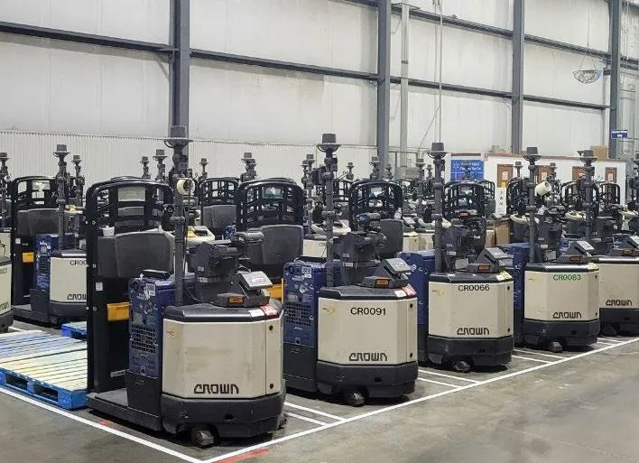
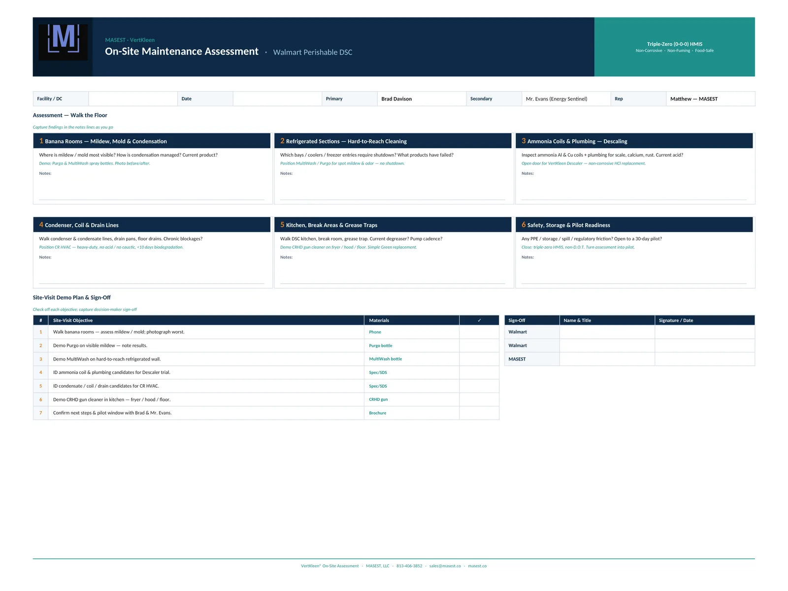
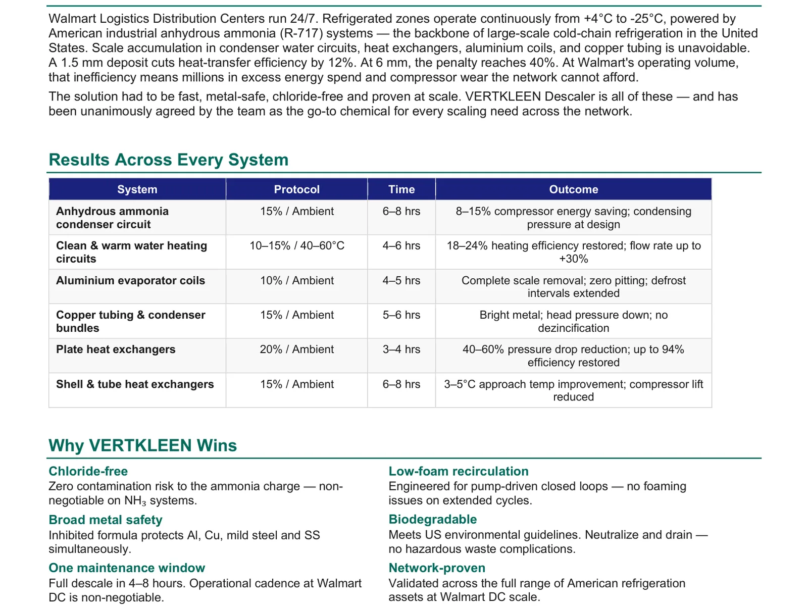

Cold-chain cleaning cannot wait for shutdown.
Perishable distribution centers, refrigerated bays, ammonia systems, forklifts, kitchens, drains, and coils with proof from Walmart DSC materials.
Why VertKleen fits Distribution / Cold Storage.
Cold-storage teams juggle mildew, freezer entries, ammonia coils, condenser lines, kitchen grease, forklifts, and pilot readiness without stopping the building. VertKleen covers that whole walkdown with Descaler, CRHD, MultiWash, Purgo, and CR, and gets the proof, SDS, and trial details to you before the operations window closes.
See the proof
What Distribution / Cold Storage buyers need documented first.
Walmart perishable DSC materials check banana-room mildew, refrigerated hard-to-reach areas, ammonia coil scale, condenser and drain-line buildup, kitchen grease, and pilot readiness.
Bundle: Descaler for ammonia coils and heat-transfer circuits, CRHD for fryer, hood, floor, forklift and parts degreasing, MultiWash and Purgo for spot mildew and odor-control support.
VertKleen products for Distribution / Cold Storage.
Replacement options for the harsh chemistry this work usually relies on first.
Field proof from Distribution / Cold Storage sites.
Documented work from the VertKleen field library.



Put the current chemical on the table.
Send the current product, surface, soil, volume, and buying deadline. We'll come back with the replacement, the proof, a sample, or a distributor — whatever you need next.